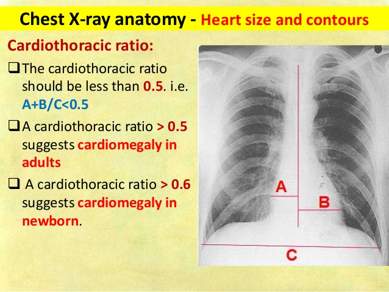

Description: Draw 3 defining lines and visualize the CTR value
Version: 2.0
Usage:
Draw the following 3 lines:
- A reference line to establish the orientation. The exact length doesn't matter.
- A second line which will be automatically split in orthogonal segments A and B.
- A third line C, again automatically split in parallel and ortogonal segments.
Finally the CTR result is displayed as a text ROI annotation.
